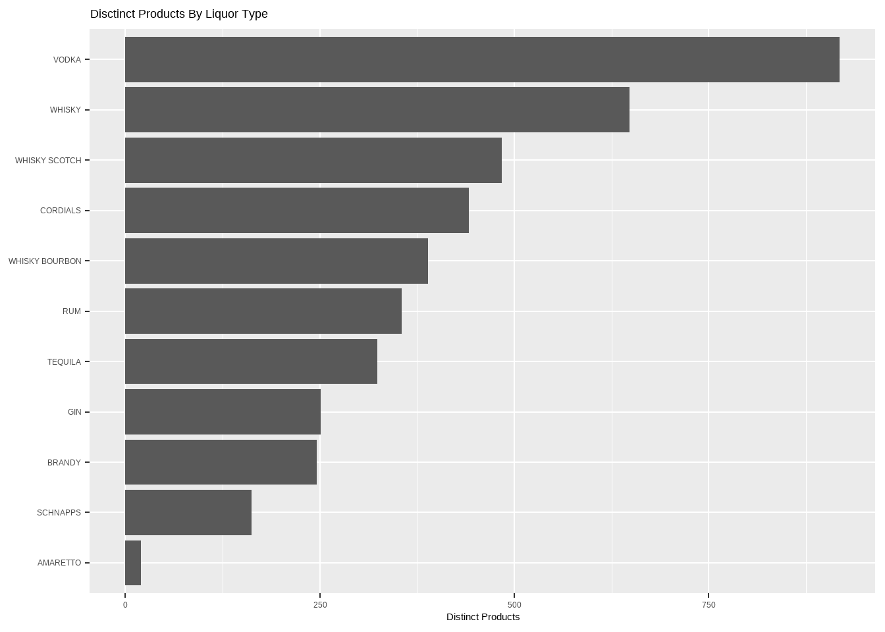
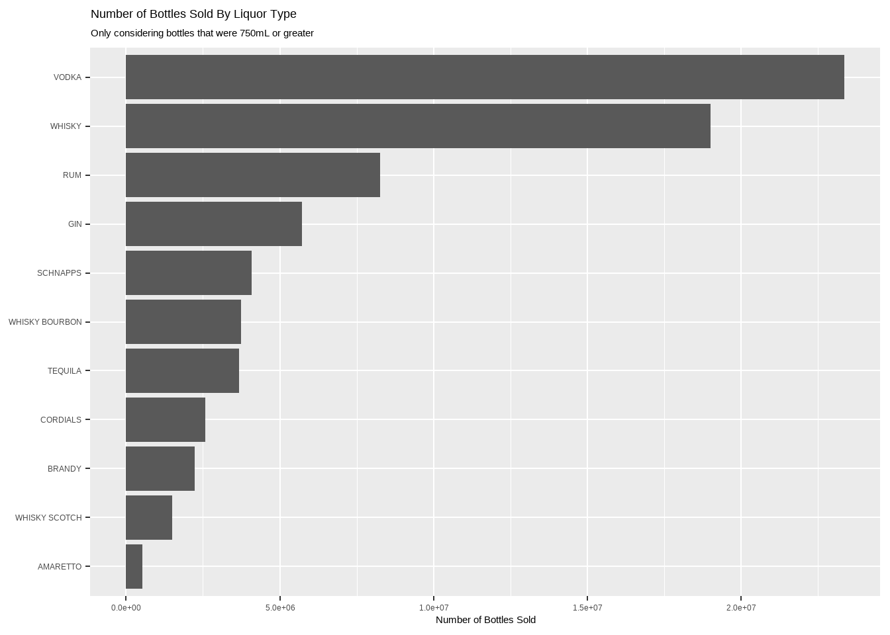

Data for this weeks analysis comes from the kaggle dataset for Iowa Liquor Sales. Our objective is to understand what types of hard liquor are most expensive.
Import Packages and Data
# librarieslibrary(forcats)
Warning: package 'forcats' was built under R version 4.1.3
library(ggtext)
Warning: package 'ggtext' was built under R version 4.1.3
library(janitor)
Attaching package: 'janitor'
The following objects are masked from 'package:stats':
chisq.test, fisher.test
library(sysfonts)
Warning: package 'sysfonts' was built under R version 4.1.3
library(showtext)
Warning: package 'showtext' was built under R version 4.1.3
Loading required package: showtextdb
library(tidyverse)
Warning: package 'tidyverse' was built under R version 4.1.3
v ggplot2 3.4.0 v purrr 0.3.5
v tibble 3.1.8 v dplyr 1.0.10
v tidyr 1.2.1 v stringr 1.5.0
v readr 2.1.3
Warning: package 'ggplot2' was built under R version 4.1.3
Warning: package 'tibble' was built under R version 4.1.3
Warning: package 'tidyr' was built under R version 4.1.3
Warning: package 'readr' was built under R version 4.1.3
Warning: package 'purrr' was built under R version 4.1.3
Warning: package 'dplyr' was built under R version 4.1.3
Warning: package 'stringr' was built under R version 4.1.3
-- Conflicts ------------------------------------------ tidyverse_conflicts() --
x dplyr::filter() masks stats::filter()
x dplyr::lag() masks stats::lag()
# data# df <- readr::read_csv("Iowa_Liquor_sales.csv") %>%# # # general tidying# janitor::clean_names() %>%# #select(invoice_item_number, date, category_name, bottles_sold, sale_dollars, volume_sold_liters) %>%# #filter(!is.na(category_name)) %>%# # I don't care about nips (50mL on average) and only care about "regular" sized bottles# filter(bottle_volume_ml >= 750) %>%# mutate(# category_name = str_to_upper(category_name),# # define the most common types of liquor# type = case_when(# str_detect(category_name, "(AMARETTO)") ~ "AMARETTO",# str_detect(category_name, "(BRANDY|BRANDIES)") ~ "BRANDY",# str_detect(category_name, "(BOURBON)") ~ "WHISKY BOURBON",# str_detect(category_name, "(CORDIALS)") ~ "CORDIALS",# str_detect(category_name, "(GIN)") ~ "GIN",# str_detect(category_name, "(RUM)") ~ "RUM",# str_detect(category_name, "(SCHNAPPS)") ~ "SCHNAPPS",# str_detect(category_name, "(SCOTCH)") ~ "WHISKY SCOTCH",# str_detect(category_name, "(TEQUILA)") ~ "TEQUILA",# str_detect(category_name, "(VODKA|VODKAS)") ~ "VODKA",# str_detect(category_name, "(WHISKIES|WHISKY|WHISKEY)") ~ "WHISKY",# ),# # define cost per bottle# sale_dollars = as.numeric(str_remove(sale_dollars, "\\$")),# cost_per_bottle = sale_dollars / bottles_sold,# # # define cost per liter# cost_per_liter = sale_dollars / volume_sold_liters# ) %>%# filter(!is.na(type)) %>%# select(invoice_item_number, item_description, category_name, type, bottles_sold, cost_per_bottle, cost_per_liter)# # head(df)df_agg <-read_csv("Iowa_Liquor_Sales - Aggregated.csv")
New names:
Rows: 11 Columns: 11
-- Column specification
-------------------------------------------------------- Delimiter: "," chr
(1): type dbl (10): ...1, distinct_items, bottles_sold, mean_cost, median_cost,
sd_cos...
i Use `spec()` to retrieve the full column specification for this data. i
Specify the column types or set `show_col_types = FALSE` to quiet this message.
* `` -> `...1`
# how many bottles were sold of the various types?df_agg %>%ggplot(aes(distinct_items, fct_reorder(type, distinct_items))) +geom_bar(stat ="identity") +labs(title ="Disctinct Products By Liquor Type",x ="Distinct Products" ) +scale_y_discrete(name =NULL)

Scotch has a MUCH higher number of disctinct products when compared to the amount of bottles sold.
# how many bottles were sold?df_agg %>%ggplot(aes(bottles_sold, fct_reorder(type, bottles_sold))) +geom_bar(stat ="identity") +labs(title ="Number of Bottles Sold By Liquor Type",subtitle ="Only considering bottles that were 750mL or greater",x ="Number of Bottles Sold" ) +scale_y_discrete(name =NULL)

# what is the median price per typedf_agg2 <- df_agg %>%arrange(desc(median_cost)) %>%mutate(price_rank =row_number(),type =str_replace(str_to_title(type), " ", "\n"),num_sold_cat =case_when( bottles_sold >10000000~"Greater Than 10", bottles_sold >7500000~"7.5 to 10", bottles_sold >5000000~"5 to 7.5", bottles_sold >2500000~"2.5 to 5", bottles_sold <=2500000~"Less Than 2.5" ),num_sold_cat =factor(num_sold_cat, levels =c("Less Than 2.5", "2.5 to 5", "5 to 7.5", "7.5 to 10", "Greater Than 10")) ) %>%head(10)bar_width <-0.4neck_width <-0.2plot <- df_agg2 %>%ggplot() +# define the "back of the glass"# geom_rect(# aes(# xmin = price_rank - bar_width, xmax = price_rank + bar_width,# ymin = 0, ymax = q2_cost# ),# color = "cornsilk3", alpha = 0.1# ) +# plot the median cost as the neck of the bottlegeom_rect(aes(xmin = price_rank - neck_width, xmax = price_rank + neck_width, ymin = q2_cost, ymax = median_cost ),fill ="wheat1" ) +# define the body of the bottle as the 2nd quantilegeom_rect(aes(xmin = price_rank - bar_width, xmax = price_rank + bar_width, ymin =0, ymax = q2_cost ),fill ="wheat1" ) +## left side of bottle bodygeom_linerange(aes(x = price_rank - bar_width, ymin =0, ymax = q2_cost),color ="cornsilk4", size =1.2, alpha =0.8 ) +## left side of bottle neckgeom_linerange(aes(x = price_rank - neck_width, ymin = q2_cost, ymax = median_cost),color ="cornsilk4", size =1.2, alpha =0.8 ) +geom_linerange(aes(xmin = price_rank - bar_width, xmax = price_rank - neck_width, y = q2_cost),color ="cornsilk4", size =1.2, alpha =0.8 ) +## right side of bottle bodygeom_linerange(aes(x = price_rank + bar_width, ymin =0, ymax = q2_cost),color ="cornsilk4", size =1.2, alpha =0.8 ) +## right side of bottle neckgeom_linerange(aes(x = price_rank + neck_width, ymin = q2_cost, ymax = median_cost),color ="cornsilk4", size =1.2, alpha =0.8 ) +geom_linerange(aes(xmin = price_rank + bar_width, xmax = price_rank + neck_width, y = q2_cost),color ="cornsilk4", size =1.2, alpha =0.8 ) +## base of bottlegeom_linerange(aes(xmin = price_rank - bar_width, xmax = price_rank + bar_width, y =0),color ="cornsilk4", size =1.2, alpha =0.8 ) +## top of bottlegeom_rect(aes(xmin = price_rank - (neck_width +0.05), xmax = price_rank + (neck_width +0.05), ymin = median_cost *0.95, ymax = median_cost ),fill ="sienna4" ) +# labels!geom_text(aes(x = price_rank, y = q2_cost *0.9, label = type),vjust =1, color ="sienna4", fontface ="bold", family = f1, size =6 ) +geom_text(aes(x = price_rank, y = median_cost, label =paste0("$", round(median_cost))),vjust =-1, color ="sienna4", family = f1, size =6 ) +# titleannotate("text", x =10.3, y =28, label ="How Much Does Hard Liquor Cost?", hjust =1,family = f1, size =16, fontface ="bold", color ="sienna4") +annotate("text", x =10.3, y =25, label ="Median Cost Per Liter By Liquor Type\nAssuming Bottle Size 750mL Or More",hjust =1, vjust =1, family = f1, size =10, color ="sienna4", lineheight =0.8) +annotate("text", x =10.3, y =20, label ='"Bottle Neck" reflect range from 25th Percentile to Median', hjust =1, vjust =1, family = f1, size =6, color ="sienna4", lineheight =0.8) +labs(caption ="Data Source: <b>kaggle.com/datasets/residentmario/iowa-liquor-sales</b> || Visualization: <b>N. Cruickshank</b> || Data reflects hard liquor sales from retail locations with a Class E Liquor License in Iowa from 2012 to 2017" ) +# scales, themes, etc.scale_x_continuous(name =NULL, expand =c(0, 0)) +scale_y_continuous(name ="Cost (USD) Per Liter", limits =c(0, 30), expand =c(0,0), labels =function(x) paste0("$", x)) +scale_fill_brewer(palette ="Blues", name ="Bottles Sold (Millions)") +theme_minimal(base_family = f1) +theme(panel.grid.minor =element_blank(),panel.grid.major.x =element_blank(),axis.text.x =element_blank(),axis.title.y =element_text(family = f1, color ="sienna4", size =14),axis.text.y =element_text(family = f1, color ="sienna4", size =12),plot.caption =element_textbox(family = f1, color ="sienna4", size =10, hjust =0) )
Warning: Using `size` aesthetic for lines was deprecated in ggplot2 3.4.0.
i Please use `linewidth` instead.